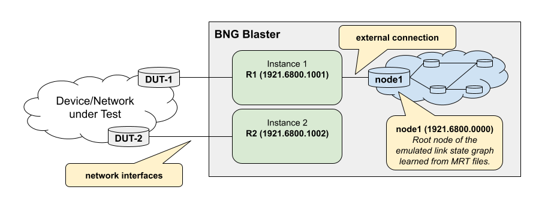
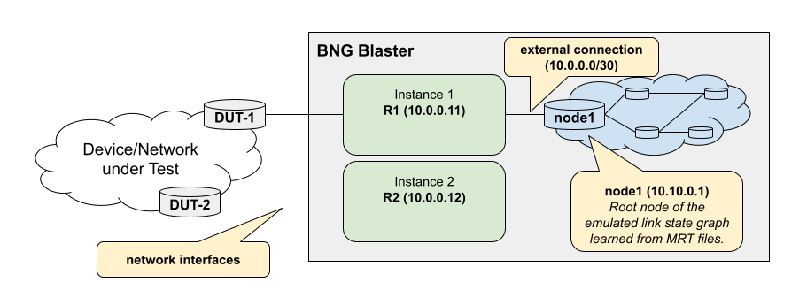

LSPGEN
The BNG Blaster includes a tool called lspgen which is able to generate
ISIS and OSPF topologies with the corresponding link state packets for export
as MRT and PCAP files. Initially, lspgen was developed exclusively for ISIS,
hence its name. However, with the introduction of OSPF support in BNG Blaster,
lspgen has been enhanced to accommodate OSPF topologies as well.
The default protocol is ISIS which can be changed using the argument -P ospf2.
$ lspgen --help
____ __ ____ _ __ ,/
/ __ \ / /_ / __ ) _____ (_)_____ / /__ ,'/
/ /_/ // __// __ |/ ___// // ___// //_/ ,' /
/ _, _// /_ / /_/ // / / // /__ / ,< ,' /_____,
/_/ |_| \__//_____//_/ /_/ \___//_/|_| .'____ ,'
__ _____ ____ ______ / ,'
/ / / ___// __ \/ ____/__ ____ / ,'
/ / \__ \/ /_/ / / __/ _ \/ __ \ /,'
/ /______/ / ____/ /_/ / __/ / / / /
/_____/____/_/ \____/\___/_/ /_/
Usage: lspgen [OPTIONS]
-v --version
-a --area <args>
-P --protocol isis|ospf2|ospf3
-K --authentication-key <args>
-T --authentication-type none|simple|md5
-r --read-config-file <filename>
-w --write-config-file <filename>
-C --connector <args>
-S --control-socket <args>
-I --control-instance <args>
-l --ipv4-link-prefix <ip-prefix>
-L --ipv6-link-prefix <ip-prefix>
-n --ipv4-node-prefix <ip-prefix>
-N --ipv6-node-prefix <ip-prefix>
-x --ipv4-external-prefix <ip-prefix>
-X --ipv6-external-prefix <ip-prefix>
-u --link-multiplier <args>
-M --lsp-lifetime <args>
-z --no-ipv4
-Z --no-ipv6
-y --no-sr
-A --sr-algo <algo,...>
-F --flex-algo <algo:igp|min-delay|te[:priority],...>
-D --link-delay <min>[:<max>]
-E --te-metric <min>[:<max>]
-B --node-msd <args>
-O --elc
-e --external-count <args>
-g --graphviz-file <filename>
-h --help
-m --mrt-file <filename>
-c --node-count <args>
-p --pcap-file <filename>
-G --purge
-f --stream-file <filename>
-s --seed <args>
-q --sequence <args>
-Q --quit-loop
-V --level <args>
-t --log normal|debug|lsp|lsdb|packet|ctrl|error
You can generate random topologies or define a topology manually using configuration files.
Connector
The connector (-C --connector <args>) represents the link between the generated
topology and the attached BNG Blaster instance.
For ISIS topologies, the connector must be set to the system-id of the ISIS
instance to which this topology is attached. In the BNG Blaster configuration,
the system-id of the root node from the generated toplogy must be referenced.

$ lspgen -a 49.0001/24 -K secret123 -T md5 -C 1921.6800.1001 -m isis.mrt
...
Sep 04 10:50:55.780109 Generating a graph of 10 nodes and 20 links
Sep 04 10:50:55.780127 Root node 1921.6800.0000.00 (node1)
...
{
"isis": [
{
"instance-id": 1,
"area": [
"49.0001/24"
],
"system-id": "1921.6800.1001",
"router-id": "192.168.1.1",
"hostname": "R1",
"level1-auth-key": "secret123",
"level1-auth-type": "md5",
"external": {
"mrt-file": "isis.mrt",
"connections": [
{
"system-id": "1921.6800.0000.00"
}
]
}
}
]
}
This is simlar for OSPFv2 but here the connector is constructed based on remote router-id
and local link IPv4 address (remote-router-id:local-ipv4-address).

$ lspgen -P ospf2 -m ospf.mrt -n 10.10.0.1 --connector "10.0.0.11:10.0.0.2" -p lspgen.pcap
...
Sep 04 11:02:59.242810 Generating a graph of 10 nodes and 20 links
Sep 04 11:02:59.242827 Root node 10.10.0.1 (node1)
...
{
"ospf": [
{
"instance-id": 1,
"version": 2,
"router-id": "10.0.0.11",
"hostname": "R1",
"external": {
"mrt-file": "ospf.mrt",
"connections": [
{
"router-id": "10.10.0.1",
"local-ipv4-address": "10.0.0.1"
}
]
}
}
]
}
Random Topologies
The following example generates a random topology with 1000 nodes.
lspgen -m isis.mrt -c 1000 -K <secret> -T md5
The arguments -K and -T add a valid authentication TLV
to the generated LSPs in the MRT file.
Those topologies could be even exported as configuration file
with the argument -w and later imported with the argument -r.
This allows the generation of a large random topology that can be modified
manually.
Segment Routing
Randomly generated topologies advertise an IPv4 and IPv6 node SID
(Prefix-SID) per node for the SR algorithm 0 (SPF), which can be
disabled with the argument -y.
The argument -A generates node SIDs for multiple SR algorithms
in ISIS topologies. Supported are the algorithms 0 (SPF), 1 (strict SPF)
and 128 to 255 (Flex-Algo) with up to 4 algorithms per topology. The
algorithms are also advertised in the SR-Algorithm sub-TLV of the router
capability. The SRGB range is automatically increased to hold the node SIDs
of all algorithms, starting with the IPv4 node SIDs of the first algorithm,
followed by those of the next algorithm. The IPv6 node SIDs follow the same
layout starting at half of the SRGB range.
lspgen -m isis.mrt -c 100 -A 0,1,128
The argument -F adds Flex-Algo definitions (FAD, RFC 9350) in the
format <algo>:<metric-type>[:<priority>] with the metric types
igp (default), min-delay and te and the default priority 128.
The definitions are advertised by the first two nodes of the topology,
each in a dedicated router capability TLV. All Flex-Algos are added to the
SR algorithms together with algorithm 0, so node SIDs are generated
for each of them.
lspgen -m isis.mrt -c 100 -F 128:igp,129:min-delay:200
The metric types min-delay and te use the application-specific
link attributes (ASLA, RFC 8919) of the links with the Flex-Algo application
bit (X). Those are added to all links of ISIS topologies if Flex-Algo
definitions, link delays (-D) or TE metrics (-E) are configured.
The link delay in microseconds and the TE metric are randomly selected
per link from the range <min>:<max>, with the same value for both
directions of a link. The values are derived from the seed (-s),
so the topology is reproducible. Without those arguments, the link
delay and TE metric are equal to the IGP metric.
lspgen -m isis.mrt -c 100 -F 128:igp,129:min-delay,130:te -D 10:1000 -E 100:200
The argument -B adds the node maximum SID depth (MSD, RFC 8491)
of type BMI-MSD with the given value (1 - 255) to all nodes of ISIS
topologies. The argument -O sets the E-flag of the prefix attribute
flags, which signals the entropy label capability (ELC, RFC 9088) for
the node prefixes.
lspgen -m isis.mrt -c 100 -B 10 -O
In configuration files, multiple Prefix-SIDs are defined per prefix
with segment_ids. The index is mandatory, the algo defaults
to 0 and the optional flags are no-php, explicit-null,
value and local. With the flag value, the index is
encoded as 20-bit label. The attribute segment_id is a short form
for a single Prefix-SID with algorithm 0. Up to 4 Prefix-SIDs are
supported per prefix, and only the first one is used for OSPF.
{
"ipv4_prefix": "10.0.0.1/32",
"metric": 0,
"node_flag": true,
"segment_ids": [
{"index": 1, "algo": 0},
{"index": 1001, "algo": 1},
{"index": 2001, "algo": 128, "flags": ["no-php"]}
]
}
The SR algorithms of the router capability are defined with
sr_algo_list (e.g. "sr_algo_list": [0, 1, 128]).
The node MSD is defined in the capability_list and the link MSD
per neighbor with msd, a list of up to two entries with type
(e.g. 1 for BMI-MSD) and value. The E-flag (ELC) is set per prefix
with "elc_flag": true.
{
"capability_list": [
{
"router_id": "10.0.0.1",
"srgb_base": 100000,
"srgb_range": 36000,
"msd": [{"type": 1, "value": 10}]
}
]
}
Flex-Algo prefix metrics (FAPM) are added per prefix with
flex_algo_metrics, for example for prefixes advertised between levels.
{
"ipv4_prefix": "10.1.0.0/24",
"metric": 10,
"flex_algo_metrics": [
{"algo": 128, "metric": 20}
]
}
The application-specific link attributes are defined per neighbor
with te_metric, min_delay and max_delay in microseconds
and the 32 bit admin_group.
{
"remote_node_id": "1337.0000.0002.00",
"metric": 10,
"te_metric": 100,
"min_delay": 1000,
"max_delay": 1200,
"admin_group": 1
}
Flex-Algo definitions are defined per node with flex_algo_list.
The algo (128 - 255) is mandatory. The metric_type is igp
(default), min-delay or te, the priority defaults to 128,
m_flag requires the Flex-Algo prefix metric for inter-area prefixes
and the 32 bit admin group masks exclude_any, include_any and
include_all are only advertised if not zero. The router_id of
the router capability TLV should be set to the router ID of the node.
{
"flex_algo_list": [
{"router_id": "10.0.0.1", "algo": 128, "metric_type": "igp"},
{"router_id": "10.0.0.1", "algo": 129, "metric_type": "min-delay",
"priority": 200, "m_flag": true, "exclude_any": 1}
]
}
Topology from Configuration File
In addition to randomly generated topologies, it is also possible to create them specifically using configuration. The following example shows the configuration for a topology with three nodes.
{
"instance": "default",
"protocol": "isis",
"level1": [
{
"node_id": "1337.0000.0001",
"hostname": "R1",
"area_list": [
"49.1337/24"
],
"protocol_list": [
"ipv4"
],
"ipv4_address_list": [
"10.13.37.1"
],
"ipv4_prefix_list": [
{
"ipv4_prefix": "10.13.37.1/32",
"metric": 0,
"segment_id": 30005,
"node_flag": true
},
{
"ipv4_prefix": "10.0.1.0/24",
"metric": 1000
},
{
"ipv4_prefix": "10.0.2.0/24",
"metric": 1000
}
],
"capability_list": [
{
"router_id": "10.13.37.1",
"mpls_ipv4_flag": true,
"mpls_ipv6_flag": false,
"srgb_base": 100000,
"srgb_range": 36000
}
],
"neighbor_list": [
{
"remote_node_id": "1337.0000.0000.00",
"metric": 10
},
{
"remote_node_id": "1337.0000.0002.00",
"metric": 10
},
{
"remote_node_id": "1337.0000.0003.00",
"metric": 10
}
]
},
{
"node_id": "1337.0000.0002",
"hostname": "R2",
"area_list": [
"49.1337/24"
],
"protocol_list": [
"ipv4"
],
"ipv4_address_list": [
"10.13.37.2"
],
"ipv4_prefix_list": [
{
"ipv4_prefix": "10.13.37.2/32",
"metric": 0,
"segment_id": 30003,
"node_flag": true
}
],
"capability_list": [
{
"router_id": "10.13.37.2",
"mpls_ipv4_flag": true,
"mpls_ipv6_flag": false,
"srgb_base": 100000,
"srgb_range": 36000
}
],
"neighbor_list": [
{
"remote_node_id": "1337.0000.0001.00",
"metric": 10
}
]
},
{
"node_id": "1337.0000.0003",
"hostname": "R3",
"area_list": [
"49.1337/24"
],
"protocol_list": [
"ipv4"
],
"ipv4_address_list": [
"10.13.37.3"
],
"ipv4_prefix_list": [
{
"ipv4_prefix": "10.13.37.3/32",
"metric": 0,
"segment_id": 30004,
"node_flag": true
}
],
"capability_list": [
{
"router_id": "10.13.37.3",
"mpls_ipv4_flag": true,
"mpls_ipv6_flag": false,
"srgb_base": 100000,
"srgb_range": 36000
}
],
"neighbor_list": [
{
"remote_node_id": "1337.0000.0001.00",
"metric": 10
}
]
}
]
}
The randomly generated topologies can be also written to a file to have an example or starting point for the desired topologies.
lspgen -P isis -w isis.json
lspgen -P ospf2 -w ospf2.json
lspgen -P ospf3 -w ospf3.json